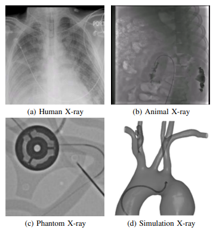

Robotic Setup.
To collect large-scale X-ray images, we employ a robotic platform and a full-size silicon phantom. A surgeon uses a master device joystick to control a follower robot for cannulating three arteries: the left subclavian (LSA), left common carotid (LCCA), and right common carotid (RCCA). The provided video shows an overview of our robotics setup and the data collecting progress. During each catheterization procedure, the surgeon activates the X-ray fluoroscopy using a pedal in the operating room. The experiments are conducted using the Epsilon X-ray Generator. We develop a real-time image grabber to transmit the video feed of the surgical scene to a workstation, a computer-based device equipped with an 8-Core ARM v8.2 64-bit CPU. Overall, we collect and label 4,700 new X-ray images to create our EIPhantom dataset.
Simulation Data.
Apart from X-ray images collected from our real robot, we also collect an EISimulation dataset from the CathSim simulator for simulated X-ray images. We manually label both data from the robot and CathSim simulator to use them in downstream tasks. We note that the datasets used to train the foundation model are not being used in downstream endovascular understanding tasks.

Table below summarises datasets related to endovascular intervention we use in this paper. All datasets cover different endovascular procedures with X-ray images as the main modality. The data are collected from diverse sources, including human/animal studies, human phantoms, and simulated environments.
X-ray datasets used in our experiments.
| Phase |
Dataset |
#Frames |
| Federated Foundation Training |
CathAction [Huang et al., 2024] |
500,000 |
| VESSEL12 [Rudyanto et al., 2014] |
12,892 |
| Drive [Staal et al., 2004] |
8,028 |
| SenNet [Walsh et al., 2021] |
7,436 |
| Medical Decathlon [Antonelli et al., 2022] |
442 |
| Downstream Fine-tuning |
EISimulation (ours) |
1,683 |
| EIPhantom (ours) |
4,710 |
| RANZCR [Hansen et al., 2021] |
33,664 |
| CathAnimal [Kongtongvattana et al., 2023] |
25,000 |